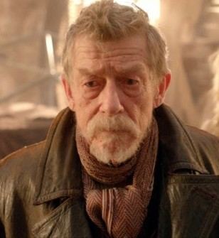

Savaş Doktoru

Savaş Doktoru, Doctor Who adlı Britanya bilim-kurgu dizisinde Doktor'un 9. yüzüdür. Fakat genellikle sıralama karışmasın diye hayranlar tarafından Savaş Doktoru olarak adlandırılır.
8. Doktor Karn'ın Kardeşliği tarafından verilen iksiri içilerek rejenerasyon geçirmiştir. Kendisini bir savaşçıya dönüştürmüş ve Son Büyük Zaman Savaşı'nı bitirip tüm evreni yok olmaktan kurtarmaya çalışmıştır. Savaş Doktor'u savaşın bitiremediğinde tüm evreni bu sonsuz savaştan korumak için An adı verilen silahı kullanarak olayları Zaman Kilidi altına almayı düşünmüştür. Fakat Kötü Kurt An'ın anahtarı olarak bedenleşip Savaş Doktor'una gelecekte nasıl biri olacağını gösterip ve bunu yapmayı isteyip istemediğini sormuştur. Savaş Doktor'u 10. Doktor ve 11. Doktor'u görmüş ve bunu yapmayı kesinleştirmiştir. Daha sonra 10 ve 11. Doktorlar'da Savaş Doktor'unu artık kabullenip An'ı kullanmasına yardım etmek için yanına geldiyseler'de Clara onlara başka yolu olduğunu anlatmıştır. Savaş Doktoru diğer tüm eski Doktorların ve 12. Doktor'un yardımıyla Galiiffrey'i Durağanlık Küpü'nün içerisine alarak Daleklerin yok olmasını ve savaşın bitmesini sağlamıştır.
Doktor'un bu rejenerasyonu biraz farklıdır. Doktor ölümcül bir yara almadığı halde yeniden canlanmıştır çünkü Doktor'un bu yüzü savaşı bitirme görevi üzerine Karn Kardeşliği'nin iksiriyle gelmişti. Galiffrey ve evren kurtarılınca bu rejenerasyon'un görevi bitti iksir onun yeniden canlanmasını sağladı. Doktor rejenerasyondan sonra Dünya'ya gitti ve orada Rose Tyler ile tanıştı.
Savaş Doktor'u 1 bölüm gözükmesine rağmen Savaşçı kişiliği ve John Hurt'un oyunculuğuyla bir whovian hayran kitlesi yaratmayı başarabilmiştir.